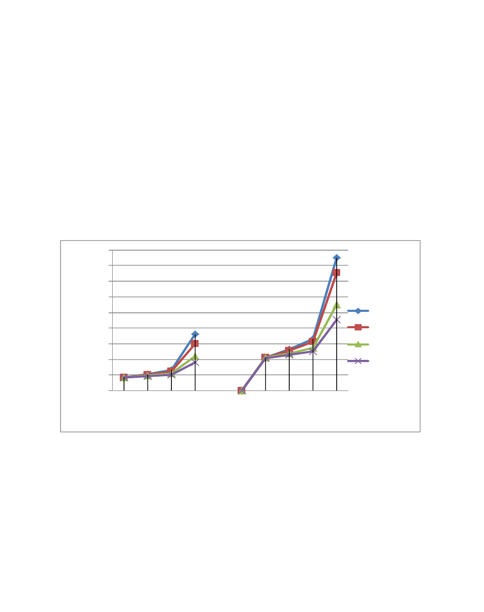

AASRI Procedia 5 ( 2013 ) 2 – 8
2212-6716 © 2013 The Authors. Published by Elsevier B.V.
Selection and/or peer review under responsibility of American Applied Science Research Institute
doi: 10.1016/j.aasri.2013.10.051
ScienceDirect
2013 AASRI Conference on Parallel and Distributed Computing Systems
Parallel Processing of Sensor Network Data using Column-
Oriented Databases
Kyung-Chang Kim
a
*, Choung-Seok Kim
b
a
Dept. of Computer Engineering, Hongik University, Seoul, Korea
b
Dept. of Information Technology, Silla University, Pusan, Korea
Abstract
Many wireless sensor network (WSN) applications require join of sensor data belonging to various sensor nodes. For join
processing, it is important to minimize the communication cost since it is the main consumer of battery power. In this
paper, we introduce a parallel join technique for sensor networks. A WSN consists of many independent sensor nodes and
provides a natural platform for a shared-nothing architecture to carry out parallel processing. The proposed parallel join
algorithm is based on sensor data that are stored in column-oriented databases. A column-oriented database store table
data column-wise rather than row-wise as in traditional relational databases. The proposed algorithm is energy-efficient
for two clear reasons. First, unlike relational databases, only relevant columns are shipped to the join region for final join
processing. Second, parallel join processing of sensor data also improves performance. The performance analysis shows
that the proposed algorithm outperforms join algorithms for sensor data that are based on relational databases.
© 2013 Published by Elsevier B.V.
Selection and/or peer review under responsibility of American Applied Science Research Institute
Keywords: Wireless sensor network; parallel join; column-oriented databases; shared-nothing architecture; communication cost
* Corresponding author. Tel.: +811-712-1606; fax: +822-320-1606.
E-mail address: kckim@hongik.ac.kr.
Available online at www.sciencedirect.com
© 2013 The Authors. Published by Elsevier B.V.
Selection and/or peer review under responsibility of American Applied Science Research Institute
3
Kyung-Chang Kim and Choung-Seok Kim / AASRI Procedia 5 ( 2013 ) 2 – 8
1. Introduction
Many sensor network applications require correlation of sensor readings scattered among sensor nodes. For
example, in an object tracking system, one may be interested in objects that travelled from one designated
region to another designated region to monitor the traffic volume and speed of particular objects. The sensor
network can be modelled as a distributed database and the sensor readings are collected and processed using
queries. To better handle the sensor readings, the sensor readings can be stored as data using a relational
database. A join is an important operation in finding the correlation of sensor readings.
One of the most important performance criteria in processing a join operation for sensor networks is to
minimize the total communication cost. A total communication cost is the total data transfer between
neighboring sensor nodes. Minimizing the communication cost is important because each sensor node has
limited battery power and data communication is the main consumer of battery energy. A naïve way to answer
an ad-hoc join query for an application, such as object tracking, is to move the sensor readings back to the
base station, and perform the join at the base station. This approach may incur high communication cost since
all sensor data have to be transmitted to the base station. A better approach is to perform the join within the
sensor network. In this in-network approach, several sensor nodes collaborate to perform the join, i.e.
distributed join. Due to the resource constraint, no single sensor node can perform the join. The result of the
join is then transmitted to the base station.
In this paper, we propose a novel join technique for wireless sensor networks to minimize the total
communication cost and improve performance. Our approach is based on two techniques; first, we use a
column-oriented databases rather than relational databases to store sensor data and second, we use a parallel
join technique. Recent years have seen an increased attention and research work on column-oriented databases.
A column-oriented database store data in column order (i.e. column-wise) and not in row order as in
traditional relational databases. They are more I/O efficient for read-only queries since they only access those
columns (or attributes) required by the query. The read-only queries are common in workloads and
applications found in data analysis, semantic web and sensor networks. Since the sensor network can be
modelled as a distributed database and the sensor nodes are independent, it provides a natural platform for a
shared-nothing architecture. Using the shared-nothing architecture, we can distribute the sensor data to be
joined and perform parallel join to improve performance.
To test the efficiency of our proposed join technique a performance analysis is conducted. Through
performance experiments, we show that our technique outperforms current join algorithms for sensor
networks based on both relational databases and column-oriented databases.
The rest of the paper is organized as follows. We discuss related works in Section 2. In Section 3, we
present a novel join algorithm based on column-oriented databases and parallelism. The query performance of
the proposed algorithm is compared with traditional join algorithms for sensor network in Section 4. The
conclusion is given in Section 5.
2. Related Works
Several techniques to handle simple joins in sensor networks are proposed in the literature [1,2]. The
general join strategies in sensor networks can be classified as naïve join, sequential join, and centroid join
depending on the location of the join region in the sensor network [2]. The main problem with these general
approaches is the communication cost overhead associated with low join selectivity. Tuples that are not
candidates for join can be unnecessarily transmitted to the join region.
A better approach is to transmit only those records that are involved in the join to the join region. Several
filtering techniques were proposed where only those sensor data involved in the join result are transmitted to
4 Kyung-Chang Kim and Choung-Seok Kim / AASRI Procedia 5 ( 2013 ) 2 – 8
the join region near the base station. One approach is the synopsis join (SNJ) algorithm [3]. The key idea is to
use synopsis of sensor readings to prune those readings that are irrelevant to join results. Another technique is
the record filtering using bit-vector (RFB) algorithm [4]. The RFB algorithm uses bit vectors produced after
semi-join is performed to prune unnecessary data before shipping data from each node to the join region.
Important optimization techniques exist for column-oriented databases. Materialization strategies, both
early and late, are important during query reconstruction [5]. The invisible join [6] extends previous work on
improving star schema queries using a column-oriented layout. A join algorithm based on column-oriented
database was proposed to perform join processing of data in sensor networks [7]. The algorithm, which we
refer to as EM, is based on an early materialized strategy in column-oriented database.
3. The Proposed Algorithm
Consider a sensor network covering a road network. Each sensor node detects ids’ of vehicles, record the
timestamp at which vehicles were detected, and keep the time-stamped records for a fixed duration. Suppose
that region R and region S represent two sets of sensor nodes where vehicle detection takes place. A join
query to determine speeds of vehicles travelling between the two regions is as follows: Select R.vehicle_id,
R.time, S.time From R, S Where R.loc in R_region AND S.loc in S_region AND R.vehicle_id = S.vehicle_id..
To evaluate the above query, sensor readings from region R and region S are collected and joined on
vehicle_id attribute. The example join query is taken from [3].
In this paper, we assume that the sensor data are stored in a column-oriented database rather than a
relational database. Column-oriented databases store data column-wise (in columns) rather than row-wise (in
rows) as in relational databases. Column-oriented databases are more efficient for read-only queries since they
read from disk only those attributes (or columns) accessed by the query. There are two materialization
strategies, early and late, in column-oriented databases. Materialization, also known as tuple stitching or tuple
construction, is a process of combining single-column projections into wider tuples and is needed to output
row-style tuples to support standards-compliant relational database interface such as ODBC and JDBC. In
early materialization strategy, each column is added to the intermediate query result to form tuples if the
column is needed. In late materialization strategy, the accessed columns do not form tuples until after some
part of the query plan has been processed.
A general query we consider in our paper is as follows: SELECT R.A1, R.A2, S.A2 FROM R, S WHERE
R.loc in R-region AND S.loc in S-region AND R.A1 = S.A1. R and S are correlation tables and the R-region (S-
region) is the R region (S region) in the sensor network where sensor readings are taken. R.A1 and S.A1 are
join attributes in R and S respectively. A query is initiated at the sensor node called query sink (i.e. sink node)
and the query result is also collected at query sink. Since the memory size at each node is limited, the sink
node is unable to perform the join locally. The join has to be performed through the collaboration of several
nodes called the join region.
The proposed algorithm is a distributed algorithm involving the R region, S-region, join region and the sink
node. The R (S) region contains a number of sensor nodes, each storing a part of relation R (S). In addition,
the join region F also contains several sensor nodes that collaborate to perform distributed join. The join
algorithm, a late materialized strategy, executes in three phases, namely the selection phase, the join phase,
and the result phase. In the selection phase, the join column values are sent to the join region F initially. In the
join phase, a semi-join is performed between the join columns of R and S to ship only qualified column values
from R region and S region to the join node F. In the result phase, the qualified column values of R and S are
stitched together to construct tuples and shipped to the sink node.
The selection phase of the proposed algorithm is composed of two steps. In the first step, the sink node
initiates the query and sends it a node in R region and S region. The receiving node broadcasts the query to the
5
Kyung-Chang Kim and Choung-Seok Kim / AASRI Procedia 5 ( 2013 ) 2 – 8
other nodes in R (S) region. Both relation R and S are partitioned into a number of disjoint sub-tables, each
with join attribute value range. Each node in R (S) region stores a sub-table. In the second step, the join
column values of relations R and S are shipped to the join node F. Using a hash-based distribution scheme,
each node in F join two subsets of R and S with same join value range. Same join attribute value of R and S
always joined at the same node in F.
The join phase of the proposed algorithm is composed of three steps. In the first step, a semi-join is
performed at each node. The result of the join produces two data structures. One is the position list and the
other is the bitmap (for R and S). We assume that a metadata is present to calculate the correct position list
and bitmap in a distributed case. The result of the semi-join is a position list with two columns, one for the
join column of R and the other for the join column of S. Each entry pair in the position list contains the
positions of join column of R and S with the same join attribute value. The bitmap contains the positions of
the join column that satisfies the join condition. In the second step, the bitmap is sent back to a node in R (S)
region. The receiving node broadcast the bitmap to the other nodes in R (S) region. In the third step, at each
node, the bitmap is used to extract values from qualified columns at the corresponding positions where the bit
is set to 1. The selected column values are shipped to the designated node in the join region F. We assume that
a metadata is present to map the table bitmap to sub-tables. The hash-based scheme in the second step of the
selection phase is used to ship the selected column values to the same node in F region as the join values with
the same position.
The result phase of the proposed algorithm is composed of two steps. In the first step, at each node in F, the
position list and the bitmap in the first step of the join phase is used to stitch together the column values of R
and S to construct tuples. The tuple stitching is performed in parallel at each node in F. We assume that a
metadata is present to map column values of R and S given the position list and bitmap. In the second step, the
constructed tuples from each node in F are shipped to the sink node as the query result.
Since the sensor nodes in the sensor network are independent, it provides a natural platform for a shared-
nothing architecture to perform parallel processing. It is straightforward to convert the distributed algorithm
just described to a parallel algorithm if we assume a shared-nothing architecture for the sensor network. The
hash-based distribution scheme ensures that tuples with same join attribute value are always sent and joined at
the same join node. This ensures that both join and tuple stitching can be performed in parallel at each
designated node.
4. Performance Analysis
To test the cost-effectiveness of the join algorithm proposed in this paper, a performance analysis is made
with the existing SNJ, RFB and EM algorithms. SNJ and the RFB algorithms are based on relational databases
while the EM algorithm uses early materialization strategy in column-oriented databases. The different
algorithms were compared in terms of the communication cost which is the number of bytes transmitted to
various nodes to get the join result.
4.1 Experiment Environment
The join algorithms were compared for different table sizes (2,000 tuples and 5,000 tuples) of R and S to
determine the effect of the increase in the number of tuples in tables R and S with regards to the
communication cost. We also tested the communication cost of the different join algorithms for several join
selectivity (0.01, 0.05, 0.1, 0.5). Join selectivity is the fraction of the tuples in the table that satisfies the join
condition. Join selectivity 0.05 means that only 5% of the tuples qualify the query.

6 Kyung-Chang Kim and Choung-Seok Kim / AASRI Procedia 5 ( 2013 ) 2 – 8
In order to simplify network traffic analysis, we assumed that no failure occurs during message
transmission. The size of the message and the tuple was assumed to be 40 bytes each. For the given query, the
size of the resulting join tuple (i.e. query result) was assumed to be 30 bytes. For column-oriented database,
the size of each column was assumed to be 10 bytes.
4.2 Experiment Result
In executing a query, the total communication cost is the sum of the communication costs for the selection
phase, join phase and the result phase. The communication cost for each phase is the cost of shipping data to
other nodes for that phase. The unit of communication cost is the number bytes transferred from a node to
other nodes. Fig. 1 shows the communication cost of the join algorithms for different join selectivity and
when the cardinality of table R and table S are 2000 tuples and 5,000 tuples respectively. The join selectivity
used in the experiment ranges from 0.01, 0.05, 0.1 to 0.5. Join selectivity of 0.1 means that only 10% of
tuples satisfies the join condition. The size of the bitmap in our proposed algorithm is number of bits where
each bit corresponds to a column position. Experiments show that the proposed algorithm outperforms both
the SNJ and the RFB algorithms for all different join selectivity tested. It also outperforms the EM algorithm
which is also based on column-oriented databases. As can be seen, the performance of the proposed algorithm
gets better as the join selectivity gets lower. In other words, as more tuples are joined and output in the join
result, the communication cost of the proposed algorithm further decreases.
Fig. 1. Communication Cost on Join Selectivity
Fig. 1 shows the communication cost of the different algorithms for different cardinalities of the tables to
be joined. The join selectivity used is 0.1 and the cardinalities are varied from 2000 tuples each for R and S to
5000 tuples each and 8000 tuple each. Our proposed algorithm outperforms both the SNJ and the RFB
algorithms for all different cardinalities tested. Compared to the SNJ algorithm, the communication cost
decreases around 18% for all cardinalities. Compared to the RFB algorithm, the communication cost
decreases around 13% for all cardinalities. As can be seen, the performance of our proposed algorithm is
better but the communication cost remains the same for different cardinalities. The performance result shows
that the join selectivity determines the communication cost more than the size of the tables to be joined.
0
50
100
150
200
250
300
350
400
450
0.01 0.05 0.1 0.5 0.01 0.05 0.1 0.5
Data Transfer (KBytes)
Join Select ivity (Left : 2000 tuples, Right: 5000 tuples)
SNJ
RFB
EM
Proposed

7
Kyung-Chang Kim and Choung-Seok Kim / AASRI Procedia 5 ( 2013 ) 2 – 8
We did not conduct experiments on the query response time for the different join techniques for sensor
networks. The reason is because we believe that the most important performance criterion for sensor
networks is the total communication cost. However, it is easy to observe that the query response time using
the parallel version of our proposed algorithm is faster than the other algorithms that are not based on parallel
computing. Using our algorithm, the more sensor nodes are involved in query processing, the faster the query
response time since the join and data shipment can be all done in parallel.
5. Conclusion
In this paper, we proposed a distributed algorithm for processing data in sensor networks. The proposed
algorithm is based on a late materialized strategy in column-oriented database where the data tables are stored
in columns. It is straightforward to convert the distributed algorithm to a parallel version if we assume a
shared-nothing architecture for the sensor network. The proposed algorithm is energy-efficient since only
those columns and column values involved in a query are shipped to sensor nodes in the join region. Several
results were reported (e.g. SNJ, RFB) on the use of filtering techniques based on relational databases to prune
unnecessary tuples before shipping the candidate tuples to the join region. A similar approach, based on
column-oriented databases, was also proposed (e.g. EM).
Experimental results showed that our proposed algorithm outperforms the SNJ, RFB and EM algorithms in
terms of the communication cost. SNJ and the RFB algorithms are based on relational databases and the EM
is based on column-oriented databases. To validate our experiment, we used different values of join
selectivity as well as different table sizes. In performance analysis, we showed that the performance of the
proposed algorithm gets better as the join selectivity decreases. In other words, if more tuples are joined and
output in the join result, the communication cost of the proposed algorithm decreases. In addition, using our
algorithm, the more sensor nodes are involved in query processing, the faster the query response time since
the join and data shipment to the join nodes can be all done in parallel.
Acknowledgements
This research was supported by Basic Science Research Program through the National Research
Foundation of Korea (NRF) funded by the Ministry of Education, Science and Technology (grant number
2012-0007012)
References
[1] Madden, S. The design and evaluation of a query processing architecture for sensor networks. Ph.D.
Thesis, UC Berkeley, CA 2003
[2] Coman, A.; Nascimento, M.; Sander, J. On join location in sensor networks. In Proceedings of Mobile
Data Management (MDM) , Mannheim, Germany, May 1, 2007
[3] Yu, H., Lim, E., Zhang, J. On In-network Synopsis Join Processing for Sensor Networks. In: Proceedings
of Mobile Data Management, Nara, Japan, 2006
[4] Kim, K.C, Oh B. J. An Energy-Efficient Filtering Approach to In-Network Join Processing in Sensor
Network Databases. In Proceedings of Multimedia, Computer Graphics and Broadcasting, Jeju, Korea, 2011
[5] Abadi, D.J., Myers, D.S., DeWitt, D.J., Madden, S.R. Materialization strategies in a column-oriented
DBMS. In Proceedings of the International Conference on Data Engineering (ICDE), Istanbul, Turkey, 2007.
[6] Abadi, D.J., Madden, S.R., Hachem, N. Column-Stores vs. Row-Stores: How Different Are They Really?
8 Kyung-Chang Kim and Choung-Seok Kim / AASRI Procedia 5 ( 2013 ) 2 – 8
In Proceedings of ACM SIGMOD, Vancouver, Canada, 2008.
[7] Kim, K.C, Kim C. S. An Energy-Efficient Technique for Processing Sensor Data in Wireless Sensor
Networks. In: Proceedings of Ubiquitous Computing and Multimedia Applications (UCMA), Bali, Indonesia
2012